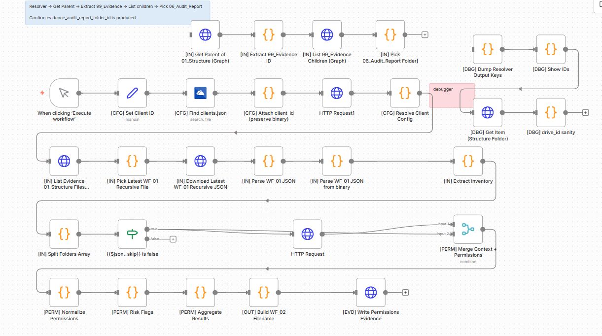
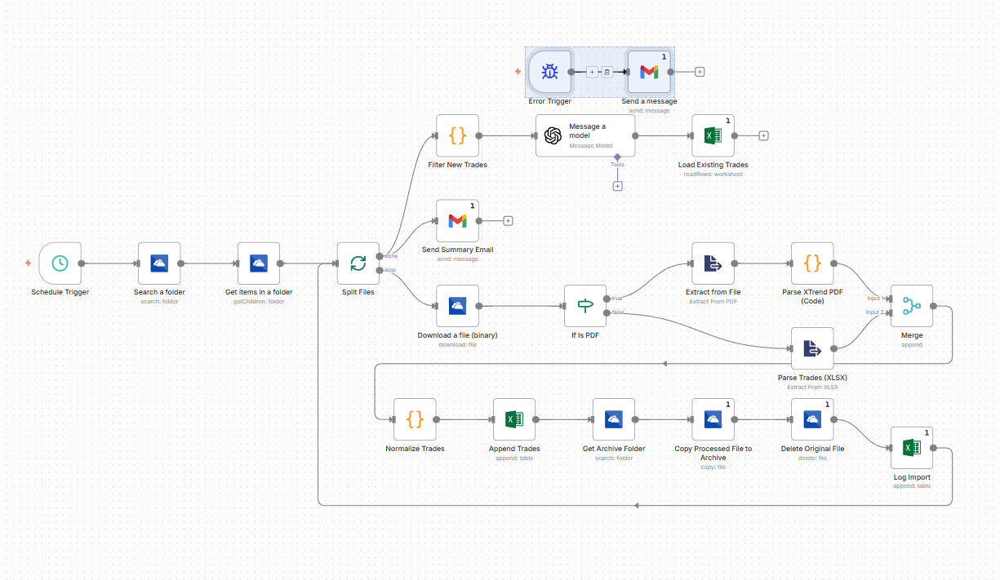
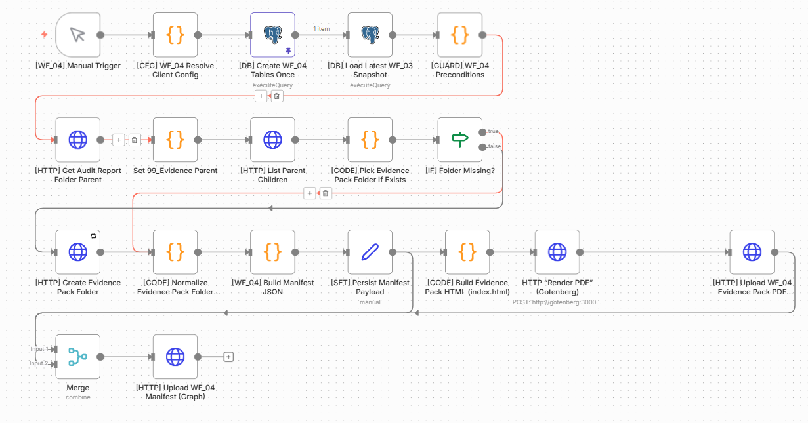

01
Workflow-Logik & Verarbeitung
Erfasst Eingaben, trennt Verarbeitungswege und fuehrt Regeln ohne manuelle Zwischenarbeit aus.
Technisches Portfolio
Automatisierung, Workflow-Logik, Integrationen und belastbare Ergebnisse.
Schwerpunkt auf praktischer Umsetzung: Eingaben erfassen, Logik ausfuehren, Schnittstellen anbinden und Ergebnisse in nutzbare Artefakte ueberfuehren.
Umsetzungsfelder
01
Erfasst Eingaben, trennt Verarbeitungswege und fuehrt Regeln ohne manuelle Zwischenarbeit aus.
02
Bindet Drittsysteme an, validiert Daten und bewertet Zustaende ueber feste Kontrolllogik.
03
Setzt Web-Flaechen als kontrollierten Einstieg und saubere Ausgabe fuer nachgelagerte Prozesse ein.
Fallauswahl
Fall 01 / WF_02 Permissions Workflow
Das System erfasst Berechtigungen, loest Strukturen technisch auf, bewertet Risiken und erzeugt revisionsfaehige Evidenz.

Unklare Zugriffsstrukturen erzeugen Sicherheitsrisiken. Manuelle Pruefung skaliert schlecht und erzeugt Luecken in der Nachvollziehbarkeit.
Die Engine erfasst Berechtigungsdaten, normalisiert Rollen und Zuordnungen, bewertet Auffaelligkeiten und aggregiert die Ergebnisse in strukturierte Evidenzdaten.
Erfassung, Normalisierung, Bewertung und Ausgabe sind getrennt. Dadurch bleiben Regeln pruefbar und Fehler lassen sich sauber isolieren.
Aus Einzelpruefungen wird ein kontrollierter Ablauf mit konsistenter Risikologik, aggregierter Sicht und direkt nutzbarer Evidenz.
Fall 02 / Andreja Mixed-Input Workflow
Die Pipeline verarbeitet PDF- und XLSX-Eingaben ueber getrennte Pfade und ueberfuehrt sie in ein stabiles gemeinsames Zielschema.

PDF- und XLSX-Dateien folgen unterschiedlichen Regeln. Ohne klare Trennung brechen Extraktion, Zuordnung und Weiterverarbeitung schnell auseinander.
Die Pipeline erkennt Eingangstypen, routet Dateien in passende Branches, extrahiert relevante Inhalte und normalisiert sie in ein gemeinsames Zielmodell.
Die fruehe Branch-Trennung reduziert Fehlverarbeitung. Das feste Zielschema stabilisiert alle nachgelagerten Schritte.
Inkonsistente Eingaben werden ohne manuelles Umformen prozessierbar und stehen nachgelagerten Schritten in stabiler Form bereit.
Fall 03 / WF_04 Evidence-Pack Workflow
Die Pipeline wandelt Verarbeitungsergebnisse in direkt nutzbare Artefakte wie PDF und strukturierte Evidenzdaten um.

Verarbeitungsergebnisse verlieren operativen Wert, wenn Kontext, Struktur und Ausgabeformat fehlen. Dann bleiben sie schwer teilbar, schwer archivierbar und nur begrenzt pruefbar.
Die Pipeline aggregiert Verarbeitungsergebnisse, strukturiert sie ueber ein Manifest und erzeugt daraus direkt nutzbare Artefakte wie HTML-Ansicht, PDF und Evidenzdaten.
Verarbeitung, Persistenz und Ausgabe bleiben getrennt. Dadurch lassen sich dieselben Ergebnisse kontrolliert in mehrere Artefaktpfade ueberfuehren.
Aus verarbeiteten Daten werden belastbare Ergebnisse fuer Pruefung, Dokumentation, Archivierung und Weitergabe ohne manuelle Nachbearbeitung.
Fall 04 / Website Entry Layer
Das Frontend arbeitet als kontrollierter Einstieg in nachgelagerte Systemprozesse und als saubere Output-Flaeche.
Viele Websites enden bei Darstellung. Fuer nachgelagerte Prozesse fehlen dann klare Erfassung, Routing und verwertbare Struktur.
Das Frontend strukturiert Informationen, fuehrt Interaktionen entlang klarer Pfade und ueberfuehrt Eingaben sauber in nachgelagerte Prozesslogik.
Wenn Erfassung und Struktur am Einstieg sauber sind, bleiben Folgeprozesse stabil und Anschlussstellen klar kontrollierbar.
Die Website arbeitet nicht als Dekoflaeche, sondern als belastbarer Entry Layer fuer verwertbare Eingaben und anschlussfaehige Ergebnisse.
Arbeitsweise & Fokus
Gleicher Input fuehrt ueber denselben Pfad zum gleichen Ergebnis.
Klare Verarbeitungspfade sind wichtiger als lose verkettete Einzelteile.
Eingaben, Regeln und Ergebnisse werden geprueft, bevor Folgeprozesse darauf aufsetzen.
Darstellung folgt auf Logik, Datenstruktur und nutzbare Ergebnisse.
Weitere Workflows und Systeme vorhanden, Auswahl bewusst auf die gezeigten Kernfaelle reduziert.